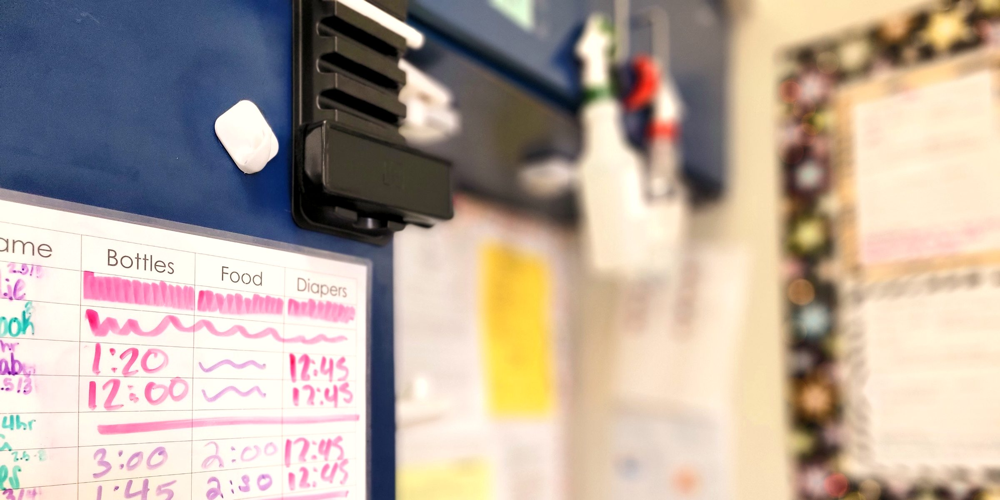

Knoxville, Tennessee · Est. 1995
Where little ones
learn to love
learning.
Full-time, year-round childcare for children 6 weeks through Pre-K. Faith-based, family-focused, and built for the way kids actually grow.
Care that goes deeper than childcare.
We believe the earliest years of a child's life shape everything that follows. At the Davis Center, every interaction — every story read, every milestone celebrated, every moment of comfort — is intentional.
As a non-profit, every dollar we receive goes back into the people and environment that make this place work. That's how we keep our rates accessible and our quality high.
Learn about us
From 6 weeks to kindergarten-ready.
Seven dedicated classrooms, each built around the specific developmental needs of children at that age.
Infant A
One-on-one attentiveness in a calm, predictable environment. We follow each baby's individual schedule for feeding, sleeping, and play.
Infant B
Safe spaces to explore, sensory materials to discover, and caregivers who celebrate every first step and every new word.
Toddlers & Twos
Structure, warmth, and imaginative play. We support big energy and bigger feelings with clear routines and gentle guidance.
Preschool & Pre-K
Cooperative learning, early literacy, and the confidence to love school before they ever walk through its doors.

Come see the Davis Center for yourself.
The best way to know if we're right for your family is to walk through the door. Tours are free, relaxed, and the best 30 minutes you'll spend this week.
Rooted and established in love. Ephesians 3:17